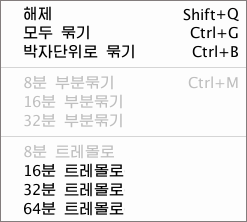

소리표차림표\묶기
<소리표\묶기>차림표를 선택하면 아래의 보조차림표가 표시됩니다. 이 지령들을
리용하여 소리표들의 이음꼬리를 묶기하거나 해제합니다.

- 해제
선택한 소리표들의 이음꼬리가 묶어진것을 해제합니다. - 모두묶기
선택한 소리표들의 이음꼬리를 모두 묶기합니다. - 박자단위로 묶기
선택한 범위의 소리표들의 이음꼬리를 소절의 박자단위로 묶기합니다.
·
8분 부분묶기
이음꼬리가 묶어진 소리표를 다시 8분이음꼬리로 부분묶기합니다.
·
16분 부분묶기
이음꼬리가 묶어진 소리표를 다시 16분이음꼬리로 부분묶기합니다.
·
32분 부분묶기
이음꼬리가 묶어진 소리표를 다시 32분이음꼬리로 부분묶기합니다.
·
8분 트레몰로
선택된 2개의 소리표를 8분 트레몰로 묶기합니다.
·
16분 트레몰로
선택된 2개의 소리표를 16분 트레몰로 묶기합니다.
·
32분 트레몰로
선택된 2개의 소리표를 32분 트레몰로 묶기합니다.
·
64분 트레몰로
선택된 2개의 소리표를 64분 트레몰로 묶기합니다.
 2개의
소리표를 트레몰로 묶기하는 방법에 대해서는 <2개의 소리표를 트레몰로 묶기하려면>을
참고하십시오.
2개의
소리표를 트레몰로 묶기하는 방법에 대해서는 <2개의 소리표를 트레몰로 묶기하려면>을
참고하십시오.
소리표의 이음꼬리를 묶기하려면
- <선택>단추를
눌러 선택방식으로 한 다음 마우스를 끌기하여 이음꼬리를 묶으려는 소리표들을 선택합니다.
- <소리표\묶기>의 보조차림표에서 필요한 지령을 선택합니다. 또는 지름건을
리용하여 선택한 소리표들의 이음꼬리를 직접 묶을수 있습니다.